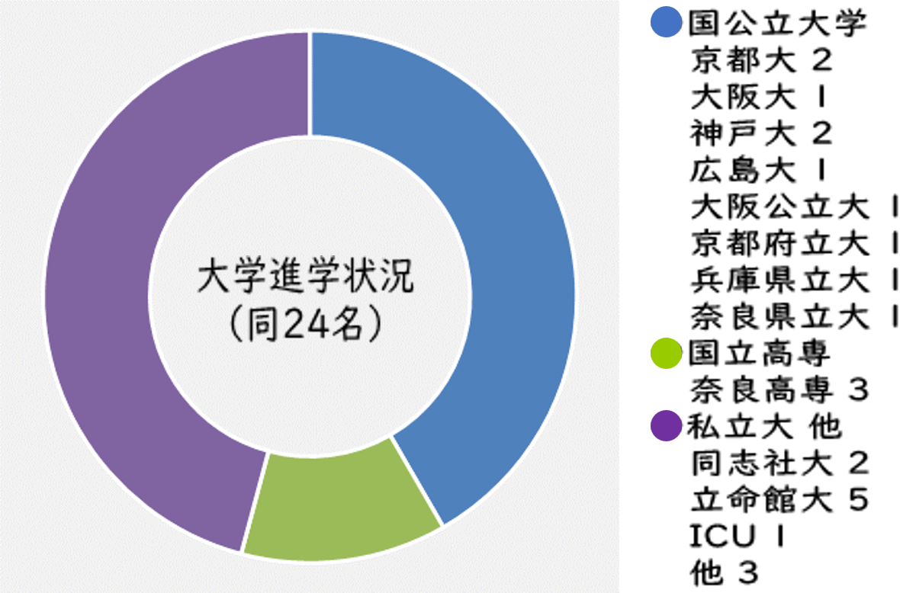
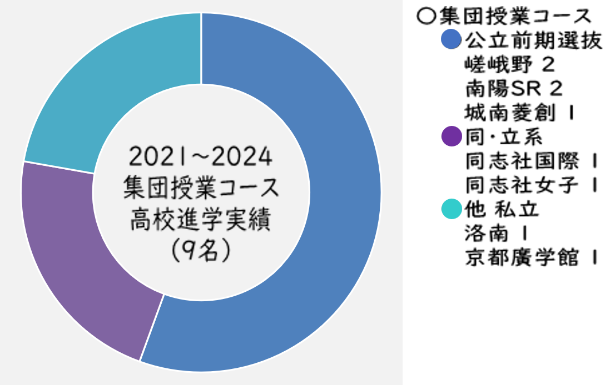

➡
 | 高校入試試験 | |
|---|---|
| 堀川 | 1 ☆ |
| 南陽 | 1 ☆ |
| 奈良高専 | 1 |
| 京都橘 | 1 ☆ |
| 京都廣学館 | 1 |
| 大学入試実績 | |
|---|---|
| 京都府立大・医学科 | 1 ☆ |
| 立命館大学 | 1 |
☆=2024年実績
中１～中３は集団授業コースで学び、高１～高３は自習サポートと個別指導を利用。休日は午前中から夜まで自習室を利用。LINEを使って自宅から質問することも。数学、物理、２次数学の記述を個別指導。予備校は高２から１科目のみ利用。高校の先生を上手に利用しながら、質の高い自習を継続して引き寄せた医学部現役合格！
中１～中２はおもに平日夜間に自習サポートを利用。塾のテスト類を使って、学習成果をチェック。英検ライティングの添削指導もしました。受験直前に再び自習サポートを利用。ここでの自習が一番落ち着いてできたとのこと。質の高い自習のできる生徒がたくさんいる堀川に行っても、君なら大丈夫。
高３夏～秋に個別指導と自習サポートを利用。内部進学の試験に向けて数学を指導。指導の後に残ってしっかり復習。そんな復習重視の勉強で短期間に約５０点上げて無事に合格、おめでとう。
他の塾に通いながら個別指導と自習サポートを利用。入試直前の２ヵ月ほど、理科の学びたい分野にだけ絞った指導をしました。高専に行きたいという気持ちと努力が合格を引き寄せました。
他の塾で学ぶも成績が伸び悩み、そこで一念発起。中３の９月から個別指導と自習サポートを利用。苦手な数学を中心に全般指導。暗記系のテストや模擬テスト演習、数学の小問テストなどをこなして成績急上昇！見事合格、おめでとう。
中３の９月から個別指導と自習サポートを利用。もともと自習でがんばっていました。苦手な数学を中心に全般指導。暗記系のテストや模擬テスト演習、数学の小問テストなどをこなして力をつけました。自習の様子を観察して気づいたことをアドバイス。成績も自習の質もさらに向上して無事に合格、おめでとう。高校でも自習がんばれ！